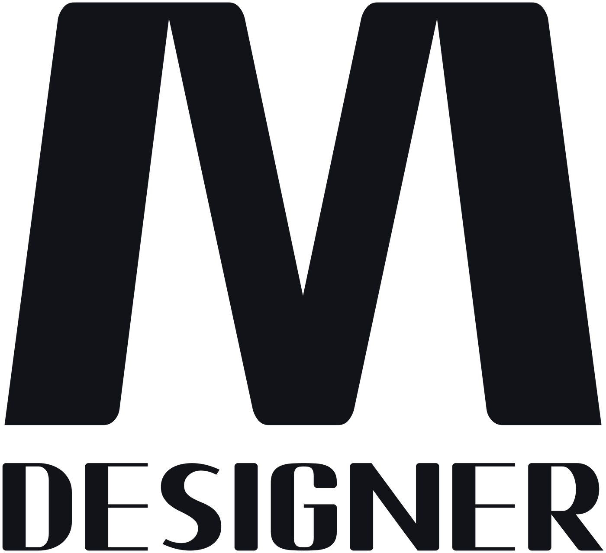

محمد المصري
مصمم جرافيك & إعلانات السوشيال ميديا
الحالة
متاح لوظيفة بدوام كامل
أو مشاريع مستقلة أو عمل عن بعد
نبذة
مصمم جرافيك في مكة المكرمة، تخصصي تصميم إعلانات السوشيال ميديا بالعربي للعلامات التجارية. أبني البوست الذي يوقف الشخص أثناء التمرير: جملة عربية تُقرأ في ثانية، منتج يبدو شهياً، وتكوين يحمل الفكرة كاملة. أعمل على Adobe Photoshop بأكثر من 3 سنوات ممارسة احترافية، وAdobe Illustrator بأكثر من سنتين، وأسلّم مونتاج الفيديو الإعلاني بـCapCut، وأنتج الصور الخام بالذكاء الاصطناعي عبر نماذج Google (Nano Banana 2 وNano Banana Pro) ثم أعالجها يدويًا حتى تكون قابلة للنشر. أنتجت 65 تصميمًا إعلانيًا لأكثر من 35 علامة تجارية في المطاعم والأغذية والمشروبات والتجزئة والسياحة، وكل حملة تُسلَّم بالمقاسات المربعة والطولية والعرضية.
المهارات الأساسية
- تصميم إعلانات السوشيال ميديا — صياغة البوست من الفكرة إلى التسليم النهائي بكل المقاسات: منشورات ثابتة، بنرات حملات، وغلافات.
- التايبوغرافي العربي — توزيع الجملة العربية على الكادر، وموازنة الوزن والحجم والمسافة مع الصورة، والخط الذي يُقرأ قبل أن يُشرح.
- تكوين ودمج المنتجات والأطعمة — قصّ دقيق، ظلال وإضاءة مقنعة، وتوحيد لون المنتج مع الخلفية حتى يبدو طبيعيًا داخل الإعلان.
- الهوية البصرية وأنظمة السوشيال — إطار موحّد لسلسلة بوستات ومقالات، وأيقونات، وتخطيط شبكي متكرر.
- مونتاج وتعديل الفيديو الإعلاني — عمل احترافي عبر CapCut: قصّ عمودي للسوشيال، توقيت على الموسيقى، نصوص متحركة، وتجهيز الريلز والستوري.
- إنتاج الصور بالذكاء الاصطناعي — صور خام سريعة عبر نماذج Google ثم معالجة يدوية: تنقية الحواف، تصحيح الإضاءة، ورفع الدقة قبل النشر.
- تصميم مواسم الحملات — رمضان والأعياد ومواسم العروض بلغتها البصرية الخاصة، مع تسليم الحملة كاملة بكل المقاسات.
الخبرة
مصمم جرافيك مستقل — إعلانات السوشيال ميديا
2022 — حتى الآنإنتاج تصاميم إعلانية بالعربي لعلامات في المطاعم والأغذية والمشروبات والتجزئة والسياحة. بناء أسلوب إعلاني موحّد لكل حملة، وتسليم كل تصميم بالمقاسات المربعة والطولية والعرضية. العمل يشمل البحث عن مرجع المنتج، والقصّ والتركيب، والتايبوغرافي العربي، والمراجعة النهائية الجاهزة للنشر.
أنظمة هوية ومحتوى — مشروع شخصي
2021 — 2024بناء هوية بصرية كاملة ونظام محتوى: إطار زخرفي موحّد، نسخ مربعة وطولية وعرضية لكل منشور ومقال، وتجارب مطوّلة على الخط العربي والتايبوغرافي. هذه المرحلة أسّست الدقة في التسليم المتكرر والالتزام بالنظام البصري.
النشر المهني على بيهاينس
فبراير 2025 — حتى الآننشر الأعمال بانتظام على Behance وبناء معرض أعمال منسّق بمشاريع ومقاسات متعددة لكل حملة، مع أكثر من 60 إعلانًا منشورًا لعلامات سعودية.
الأدوات
المجالات واللغات
مسار التعلّم 2021 — 2026
البداية — أساسيات Photoshop
تعلّم من الصفر: الطبقات، التحديد والقصّ، تصحيح الألوان، ودمج الصور. تدريب طويل على تجهيز الصور وتنظيف حوافها.
Photoshop بعمق — وأول هوية بصرية
تركيب منتجات الطعام، ظلال وإضاءة مقنعة، وأول هوية كاملة. بداية تعلّم Adobe Illustrator: المتجهات والشعارات والتخطيط الشبكي.
أنظمة محتوى وسوشيال بالعربي
إطار زخرفي موحّد، نسخ مربعة وطولية وعرضية لكل محتوى، وتجارب جدية على التايبوغرافي العربي والخط.
احتراف Illustrator + مونتاج CapCut
تثبيت Illustrator على الشعارات والأنظمة، وإضافة مهارة مونتاج الفيديو الإعلاني: قصّ عمودي، توقيت على الموسيقى، ونصوص متحركة.
إعلانات العلامات السعودية
النشر المنتظم على بيهاينس وأكثر من 60 إعلانًا للمراعي والبيك والطازج وجاهز وجرير وكينزا والقدية ودبي وغيرها.
الذكاء الاصطناعي التوليدي — واليوم
سنتان على نماذج Google للصور (Nano Banana 2 وNano Banana Pro) مع معالجة يدوية، وتوسيع الأعمال على علامات جديدة وتسليم كل حملة بكل المقاسات.
العلامات التجارية في الأعمال
أكثر من 35 علامة تجارية في السعودية والخليج. الرقم بجانب كل اسم يمثّل عدد التصاميم المنفّذة له.
و21 علامة أخرى: بيت الكيك، تاكوهت، سلطان السمك، السعودية للأجبان، مذاق، مرامي، خيال، إندومي، فلافل بوراك، فول الوزير، كونتري، بيرين، باجة، برجر مش، اليوم، العلالي، الرومانسية، المسافر، عروض بيتزا، العدنان، ونوتشن.
التواصل
البريد: muhammedwork7623@gmail.com — الرد خلال يوم عمل. البورتفوليو الكامل بكل التصاميم ومقاساتها على robliation.github.io/muhammed-portfolio-site، والأعمال المنشورة على Behance.
Muhammad Al-Masri
Graphic Designer & Social Advertising Designer
Status
Open to a full-time role,
freelance projects and remote work
Summary
Graphic designer in Mecca, Saudi Arabia, specialising in Arabic social media advertising for brands. I build the post that stops someone mid-scroll: an Arabic line that reads in one second, a product that looks appetising, and a composition that carries the whole idea. 3+ years of professional Adobe Photoshop practice, 2+ years in Adobe Illustrator, advertising video edited in CapCut, and two years producing raw imagery with Google's generative models (Nano Banana 2, Nano Banana Pro) before hand-retouching it for publication. Delivered 65 advertising designs for more than 35 brands across restaurants, food, dairy, beverages, retail and tourism, with every campaign shipped square, portrait and landscape.
Core Skills
- Social media advertising design — brief to final delivery in every format: static posts, campaign banners and covers.
- Arabic typography — setting the Arabic line in the frame, balancing weight, size and negative space against the image.
- Product and food compositing — precise cut-outs, believable shadow and light, and colour matching so the product sits naturally in the ad.
- Visual identity and social systems — one consistent framework across a post series, iconography and repeatable grid layouts.
- Advertising video editing and montage in CapCut — vertical cuts for social, timing to music, animated type, reels and stories delivery.
- AI-assisted image production — fast raw generation with Google models, then hand retouching, edge cleanup and upscaling before publishing.
- Seasonal campaign design — Ramadan, Eid and offer seasons built in each season's own visual language.
- Multi-format delivery — square, portrait and landscape versions of every campaign, export-ready for each platform.
Professional Experience
Freelance Graphic Designer — Social Advertising
2022 — PresentProduce Arabic advertising design for Saudi brands in restaurants, food, dairy, beverages, retail and tourism. Build one visual system per campaign and deliver every design square, portrait and landscape. Day-to-day work covers product reference and cut-out, compositing and lighting, Arabic headline setting, colour matching, and final quality control before publication.
Visual Identity and Content Systems — Personal Brand Project
2021 — 2024Built a complete identity and content system: one decorative frame across the series, square, portrait and landscape variants for every post and article, and extended experiments in Arabic type. This stage established the discipline of repeatable, on-system delivery.
Published Portfolio — Behance
February 2025 — PresentConsistent professional publishing on Behance with organised projects and multiple formats per campaign; more than 60 advertising designs released for Saudi brands.
Tools and Software
- Adobe Photoshop — 3+ years (compositing, colour correction, retouching, print and web output)
- Adobe Illustrator — 2+ years (vector marks, identity systems, layout grids)
- CapCut — 2+ years (professional advertising video editing and montage)
- Nano Banana 2 and Nano Banana Pro by Google — 2 years (generative raw imagery)
- ImageFX, Whisk AI and UpScayl — raw generation and quality upscaling
Learning and Development
- 2021 — Adobe Photoshop fundamentals: layers, selection and cut-outs, colour correction, compositing.
- 2022 — Advanced Photoshop for food and product work; first complete visual identity; Adobe Illustrator started.
- 2023 — Arabic typography and content systems; multi-format post and article frameworks.
- 2024 — Illustrator to a professional level; added CapCut video editing and motion type for social.
- 2025 — Saudi brand advertising at scale; systematic publishing on Behance.
- 2026 — Generative AI image production with Google models, integrated into a hand-retouched workflow.
Selected Brands
Almarai (12), Jarir Bookstore (4), Al Baik (3), Tazaj (3), Jahez (2), Shawarmer (2), Just Samboosa (2), Sadia (2), Kinza (2), Aseer Time (2), Dubai (2), Hungerstation, Qiddiya, National Poultry, Centrepoint, Vimto, Indomie, Saudia Cheese, The Cake House, Takohat, Sultan Al-Samak, Mazaaq, Marami, Kayal, Falafel Burak, Ful Al-Wazir, Country Corn Flakes, Berain, Bajah, Burger Mish, Al Yawm, Al Ulali, Al Romansia, Al Musafir, Al Adnan, Pizza Offers and Notion — 37 brands in total.
Sectors
Restaurants and food · FMCG and grocery · Drinks and juices · Retail and lifestyle · Tourism and places · Ramadan and Eid · Brand and social systems · Concept and experimental.
Languages
Arabic — native · English — professional working proficiency.
Portfolio and Contact
Email: muhammedwork7623@gmail.com — reply within one working day. The full portfolio, with every design shown at full size and its original pixel dimensions, is at robliation.github.io/muhammed-portfolio-site, and published projects are on Behance at behance.net/M_Designer_Original.